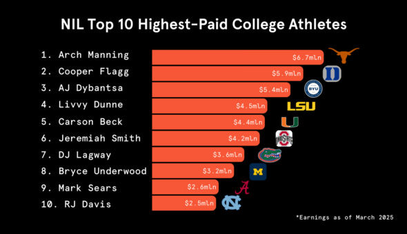

College sports are beginning to change. Why? The biggest reason is NIL. College athletics were built around athletes competing for their schools, earning scholarships and representing their colleges, but with all this hard work and dedication, they were not allowed to make money off their own talent.
The NCAA used to focus on “preserving the purity of college sports.” (Collins) Universities were making millions from media and ticket sales, while student-athletes couldn’t earn anything beyond their scholarship. As Marcus Collins describes in Forbes, “It was a system that generated billions in revenue while student-athletes, the very individuals at the heart of this economic engine, were prohibited from earning a dime from their talents beyond their school scholarships.” NIL came into play to help balance that fix.
NIL now allows athletes to “take on added duties to maintain their image, negotiate deals, effectively engage with brands, and sign agreements that are compliant with various rules and laws” (Hughes). This is a huge change in how college athletics are viewed: athletes are no longer just teammates; they are now individual brands. This shift now gives athletes an advantage that older generations never had. Student-athletes are now able to build connections and gain business knowledge that will be helpful even after their collegiate careers end.

Although NIL has had its positives, it has made college sports into a more professional setting. Michael Hughes explains how “Primary impacts of NIL rights are how it introduces elements of professional sports into the college arena” (Hughes). Student-athletes aren’t just student-athletes; they now have added responsibilities, such as maintaining their image and following certain rules, and, on top of all that, they must attend school and practice. Another major impact of NIL is that athletes are now choosing where to play based on which program offers the best NIL opportunities. In most cases, the financial side of their recruiting might be the deciding factor rather than the school team or traditions. This shows how much the line of what college sports used to be to what they are becoming.
Overall, NIL has helped to give athletes a voice, but it has drastically changed the purity of what college sports were. Student-athletes today aren’t just balancing athletics and academics, but also the business side of their sports. College athletics have shifted to branding and money. However, there are positives to NIL, including greater financial freedom and the ability to gain real-world business knowledge. Whether this change is good or bad, the only thing that is clear is how much the image of a student athlete has changed permanently.